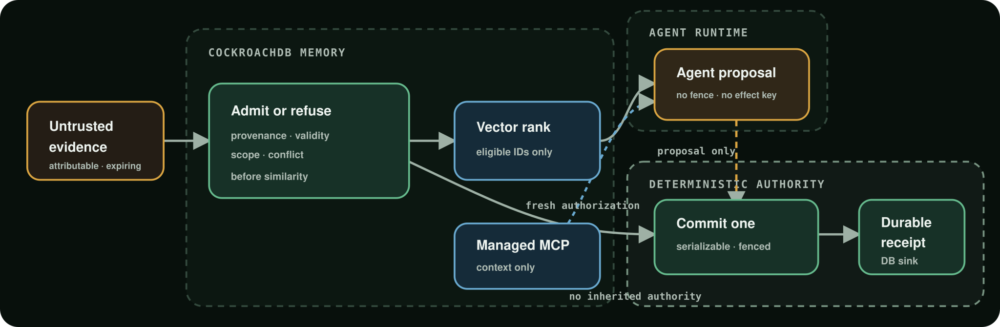

Loading local deterministic replay
Trust boundary
Relevance can suggest. Only admissibility can authorize.
Source-reviewed architecture design · execution not shown

This diagram explains the reviewed source design. It is not a live topology view, deployment receipt, or proof that any depicted AWS, CockroachDB, Distributed Vector Indexing, or Managed MCP component executed.
Three-act judge path
Watch the authority boundary hold.
Focus this static replay, then use arrow keys or the presenter controls
Loading proof…
Loading the local proof.
Snapshot checks
Precomputed checks are not provider proof.
Green means the exact static JSON records the local invariant as true
Loading checks… View every invariant
Source and evidence boundaries
Every claim carries its boundary.
Provider-oriented evidence documents
The public repository contains historical and source-oriented evidence documents. This fallback does not re-perform or independently verify their provider activity.
- Source
40e9a3a86c232cedcad81d89b8ca4d84081632ec- Mode
- External source links only
- Limit
- No provider receipt is generated here
Source design only
This static branch serves HTML, CSS, JavaScript, an architecture asset, and an exact precomputed scenario. It has no provider credentials and performs no provider execution.
- Source
40e9a3a- Cloud state
- Not demonstrated by this fallback
- Limit
- No live AWS, CockroachDB, DVI, or Managed MCP evidence.
Current boundary
Runnable static replay. No provider proof.
This page is a precomputed local replay published through GitHub Pages. It does not execute AWS Lambda, CockroachDB, Distributed Vector Indexing, or Cloud Managed MCP. It is not a deployment receipt, functional provider demo, production claim, disaster-readiness claim, truth-detection claim, or exactly-once real-world-effect claim.
About this fallback
Static by design, explicit by default.
STATIC FALLBACK · PRECOMPUTED LOCAL REPLAY · NO LIVE AWS OR DATABASE EXECUTION. The exact scenario JSON was deterministically generated from the reviewed public source commit below and then published as inert static data. Browser controls only navigate that snapshot.
View exact scenario JSON View source identity receipt View static file hashes